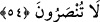

dilediği kimse için bağışlar.” (en-Nisâ, 4/48, 116) âyeti ve “O sana verecek ve sen
razı olacaksın.” (ed-Duhâ, 93/5) âyeti olduğunu söylemişlerdir. Bunun sebebi şudur:
Allah tarafından gönderilen her peygamber rahmet hükümlerinin bir bölümüne
mazhardır. Bu yüzden peygamberlik görevi de belli bir kavimle sınırlı olmuştur. Bizim
Peygamberimiz ise rahmetin hakîkatine mazhar olduğu için umûma gönderilmiştir. O’nun
hakkında “Biz seni ancak âlemlere rahmet olarak gönderdik.” (el-Enbiyâ, 21/107)
buyrulmuştur. Allah’ın rahmâniyyet hükmü Hz. Peygamber’in şefâati ile tam olarak
ortaya çıkar. O şefâat sâyesinde O’nun bütün insanların efendisi olduğu belli olur. Öyle
ki şefâat yetkisine sâhip olan melekler, peygamberler, velîler ve mü’minler ancak ondan
sonra şefâat ederler. Öyleyse ey ümmet-i merhûme/rahmete lâyık ümmet, Allah’ın
mutlak rahmetinden ümit kesmeyin. Allah bu rahmetin mazharı olan zâtın şefâati ile
bütün günahları bağışlar.
Câmî der ki:
Ayrılıktan âlemin canı çıktı,
Merhamet ey Allah’ın Rasulü, merhamet et.
Günah deryasına batmış olsak da
Dudakları kuru yol tozuna düşmüş kimseleriz.
Sen rahmet bulutusun,
Dudakları kurumuş olanlara bir nazar et.
54. Size azap gelip çatmadan önce Rabbinize dönün, O’na teslim olun, sonra size
yardım edilmez.
Ey kullarım! “Size” dünyâda ve âhirette “azap gelip çatmadan önce” işlediğiniz
günahlardan tevbe ederek “Rabbinize dönün, O’na teslim olun,” Amellerinizi sırf
O’nun rızâsı için yapın. Çünkü sâlim, hâlis mânâsınadır. “Sonra size yardım edilmez.”
Allah’ın azâbı gelmeden evvel tevbe etmezseniz kimse Allah’ın azâbının başınıza
gelmesini engelleyemez! Yâni, hiç kimse başınıza gelecek azâbı savuşturmanıza yardım
edemez. Âyetin sonundan anlaşılan buradaki hitâbın kâfirlere olduğudur. Mânâ ise
şöyledir: Ey insanlar! Şirkten îmâna dönün ve Allah Teâlâ için tevhîdi samîmî yapın.
Sûfiler tâifesinin seyyidi Cüneyd (k.s.) der ki: Herşeyden tamamıyla kesilin/alâkayı
koparın. Başkasının üzerinde izi bulunan ve sırrında kâinâta dâir düşünce olduğu halde
kimse bize hakîkaten dönmemiştir. Kim bize âid olursa bizim dışımızdakilerden
(mâsivâ) hür olur.
el-Es’iletü’l-müfhıme’de der ki: “Tevbe ile inâbe arasındaki fark şudur: Tevbe eden
cezâdan korkarak Allah’a döner. İnâbe eden (münîb) ise Allah’tan utanarak ve O’nu
arzuladığı için Allah’a döner.”